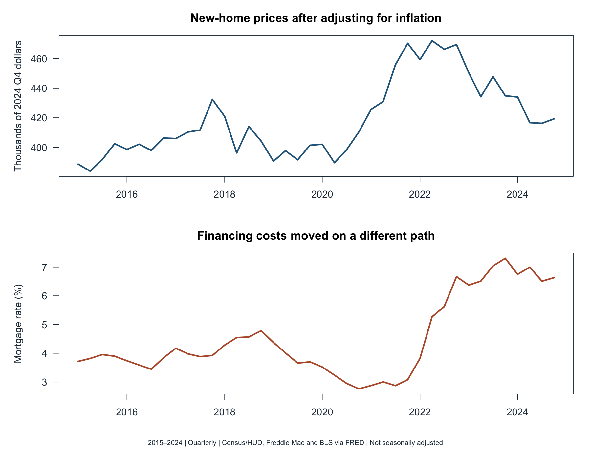
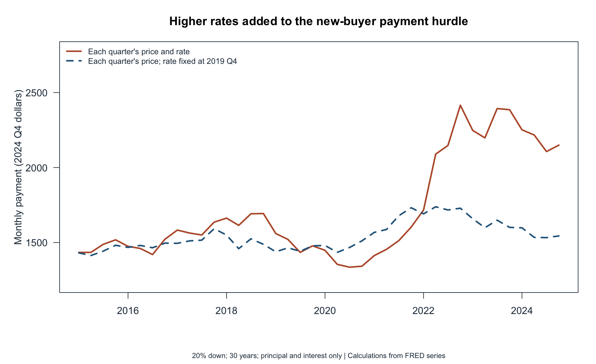
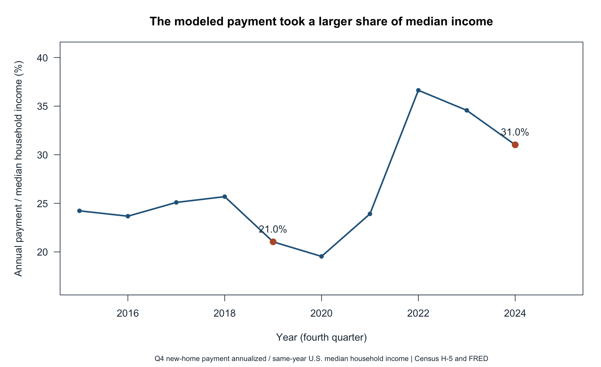

Beyond the Sticker Price: The Cost of Financing a New Home
Prices, mortgage rates, and the income benchmark, 2015–2024
What changed a new-home buyer’s monthly payment more between late 2019 and late 2024: the home’s price or the mortgage rate? In my model, the payment rose about $671 per month in 2024 dollars. Changing only the rate adds about $580; changing only the inflation-adjusted price adds about $66. The two changes also interact, adding the remaining $26. The rate increase did most of the work.
1. Prices and rates moved differently

The median price of a new home rose just 4.5% after adjusting for overall inflation between 2019 Q4 and 2024 Q4. The average 30-year mortgage rate, however, climbed from 3.7% to 6.6%. A home can therefore cost much more each month even when its inflation-adjusted price changes only a little.
2. Turn those changes into a monthly payment

I assume a 20% down payment and a 30-year fixed-rate loan. Under those assumptions, the monthly principal-and-interest payment rose from $1,478 to $2,149 in 2024 Q4 dollars. The dashed line asks what the payment would have been if the rate had stayed at its 2019 Q4 level while prices followed their actual path. At the 2024 price, that payment would have been $1,544, $606 below the modeled payment with the 2024 rate. This gap includes the small interaction between the higher rate and the changed price; it is not the rate-only figure quoted above.
3. Compare the payment with income

This third figure asks a different question: how large is the modeled payment beside a typical household’s income? I multiply each fourth-quarter monthly payment by 12 and divide it by the Census Bureau’s annual U.S. median household income. I use current dollars for both the payment and income in each year. The share rose from 21.0% in 2019 to 31.0% in 2024. Median income grew, but it did not keep up with the payment in this comparison.
Takeaway
Of the roughly $671 increase in the inflation-adjusted monthly payment, about $580 comes from the higher rate alone and only about $66 from the higher real price alone. Their interaction accounts for the rest. The payment also rose from about 21.0% to 31.0% of median income. For a prospective buyer, the interest rate deserves as much attention as the listing price.
These figures provide a national benchmark, not a measure of what a particular buyer can afford. The new-home median changes with the mix of homes sold; the median-income household need not buy a new home. I also leave out property taxes, insurance, maintenance, fees, and the down payment itself. The price, rate, and CPI data are not seasonally adjusted, so I compare the same quarter in each year. Freddie Mac changed its mortgage survey methodology in 2022.
Data and method
I use new-home prices, mortgage rates, and consumer prices from FRED, plus Census Table H-5 for income. I average the weekly rates and monthly CPI values within each quarter, then convert prices and payments to 2024 Q4 dollars. I calculate the payment for each quarter’s price and rate and repeat the calculation with one 2019 Q4 input held fixed at a time. Those comparisons describe loan arithmetic, not a causal effect of interest-rate policy on house prices.
Reproduce the analysis
The README documents folders, assumptions, and commands. Analysis code, plotting code, quarterly data, income comparison, and download provenance are available alongside the GitHub repository. Ordinary rendering checks and reuses saved downloads; an explicit refresh retrieves new data, which may include revisions.